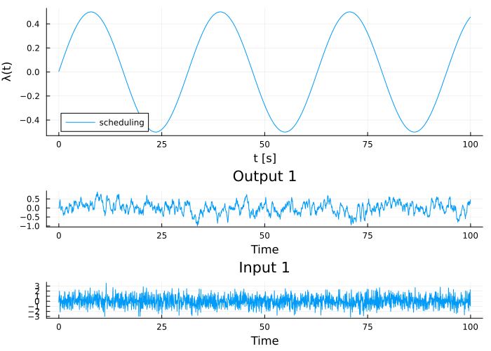
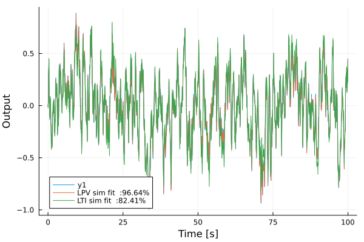
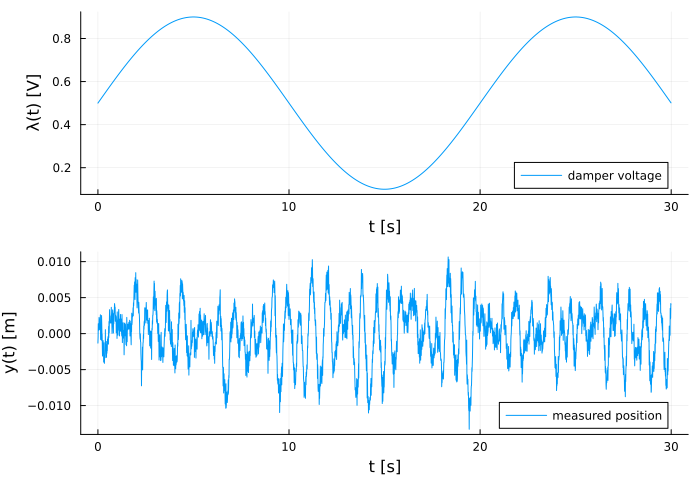
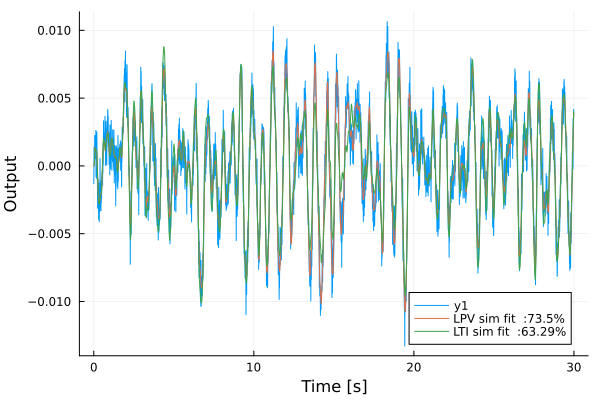
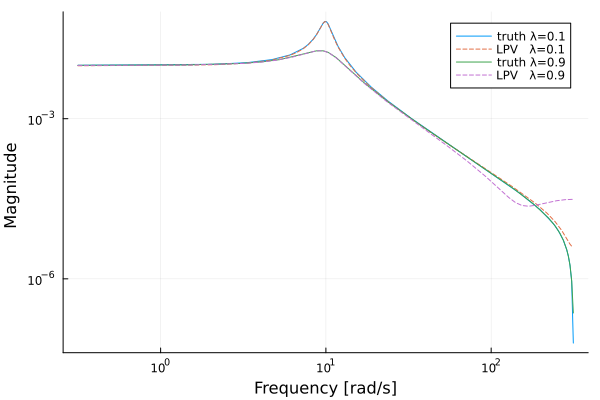

Linear Parameter-Varying (LPV) identification
LPV identification in this package is considered experimental and may change in the future without respecting semantic versioning.
This example shows how to identify a Linear Parameter-Varying (LPV) state-space model using lpv_pem. The model has matrices that depend on a known, measured scalar scheduling variable $\lambda(t)$:
\[\begin{aligned} A(\lambda) &= \sum_{k} A_k\, \varphi_k(\lambda),\\ B(\lambda) &= \sum_{k} B_k\, \varphi_k(\lambda),\\ C(\lambda) &= \sum_{k} C_k\, \varphi_k(\lambda),\\ D(\lambda) &= \sum_{k} D_k\, \varphi_k(\lambda), \end{aligned}\]
where $\{\varphi_k\}$ is a user-supplied basis in $\lambda$. $\lambda$ may or may not coincide with a state variable of the system; the only requirement is that it is measured at every time step. There is a single shared state-space realization whose entries vary smoothly with $\lambda$.
Generating data
We simulate a known affine-in-$\lambda$ system, $A(\lambda) = A_0 + \lambda A_1$, $B(\lambda) = B_0 + \lambda B_1$, driven by white-noise input. The scheduling variable is a slow sinusoid.
using ControlSystemIdentification, ControlSystemsBase, Plots, Random, LinearAlgebra, Statistics
Random.seed!(0)
Ts = 0.05
T = 2000
A0 = [0.85 0.10; -0.05 0.80]
A1 = [0.05 0.00; 0.10 -0.05]
B0 = [0.10; 0.20;;]
B1 = [0.00; 0.05;;]
C = [1.0 0.0]
A(λ) = A0 .+ λ .* A1
B(λ) = B0 .+ λ .* B1
λ = 0.5 .* sin.(0.01 .* (1:T))
u = randn(1, T)
y = let
x = zeros(2)
y = zeros(1, T)
for t in 1:T
y[:, t] = C * x
x = A(λ[t]) * x + B(λ[t]) * u[:, t]
end
y
end
y .+= 0.01 .* randn(size(y))
d = iddata(y, u, Ts)
plot(
plot(timevec(d), λ; xlabel="t [s]", ylabel="λ(t)", lab="scheduling"),
plot(d);
layout = (2, 1), size=(700, 500),
)
Fitting an LPV model
We choose an affine basis in $\lambda$, $\varphi_1(\lambda) = 1$, $\varphi_2(\lambda) = \lambda$, and estimate the parameters with lpv_pem. lpv_pem warm-starts from a sliding-window subspace fit (see lpv_warmstart) when no initial guess is given.
basis = [λ -> 1.0, λ -> λ]
res = lpv_pem(d, λ, 2; basis, show_trace = false, iterations = 200)
sys_lpv, x0h, _ = res(sys = LPVStateSpace with nx=2, nu=1, ny=1, nb=2, Ts=0.05, x0 = [-0.06981304263404793, -0.06339807060946015], res = * Status: failure (reached maximum number of iterations)
* Candidate solution
Final objective value: 2.087146e-01
* Found with
Algorithm: BFGS
* Convergence measures
|x - x'| = 7.66e-04 ≰ 0.0e+00
|x - x'|/|x'| = 7.76e-04 ≰ 0.0e+00
|f(x) - f(x')| = 3.17e-08 ≰ 1.0e-16
|f(x) - f(x')|/|f(x')| = 1.52e-07 ≰ 0.0e+00
|g(x)| = 6.58e-03 ≰ 1.0e-12
* Work counters
Seconds run: 1 (vs limit 100)
Iterations: 200
f(x) calls: 371
∇f(x) calls: 201
∇f(x)ᵀv calls: 0
)The returned sys_lpv is an LPVStateSpace. It is callable: passing a scheduling value freezes the matrices and returns a plain StateSpace.
sys_lpv(0.0)StateSpace{Discrete{Float64}, Float64}
A =
0.6674280175985896 0.1442145429212999
-0.2082675068228129 0.9861951583699529
B =
0.46685534655509286
0.17848024905277846
C =
0.4626012291802766 -0.6481229253799683
D =
0.00032576005963250827
Sample Time: 0.05 (seconds)
Discrete-time state-space modelValidation
We compare simulation performance against ground truth on the full trajectory and against a single LTI fit by subspaceid. As with predplot for the LPV case, passing the schedule λ as the third positional argument to simplot is enough for it to route through the LPV one-step predictor. Each trace is annotated with its NRMSE fit percentage.
sys_lti = subspaceid(d, 2)
simplot(sys_lpv, d, λ; sysname = "LPV")
simplot!(sys_lti, d; sysname = "LTI", ploty = false)
On varying-$\lambda$ data the LPV model is strictly better than any single LTI fit, because the LTI model cannot match the changing dynamics.
A practical example: semi-active suspension
A common real-world use of LPV identification is semi-active vibration isolation: a mass-spring-damper where the damping coefficient is set by a controllable voltage. Magneto-rheological shock absorbers on a vehicle suspension and active engine mounts are typical instances. The damper voltage is sampled at every time step, so it is a known scheduling variable that enters the system matrix directly.
The continuous-time 1-DOF model is
\[m\ddot{x} + c(\lambda)\dot{x} + k x = u,\qquad c(\lambda) = c_0 + c_1\lambda,\qquad y = x,\]
with state $[x,\ \dot{x}]^\top$. In state-space form the only λ-dependence sits in the $(2,2)$ entry of $A$, which makes this a textbook affine-in-λ LPV system. With the parameters used below the damping ratio sweeps from $\zeta \approx 0.05$ (sharp resonance) to $\zeta \approx 0.3$ (well-damped) as $\lambda$ is varied, easily distinguishable in the data.
Simulating a damper-sweep experiment
We simulate a 30 s experiment where the operator slowly sweeps the damper voltage while exciting the mass with broadband noise. The damper voltage is measured, and is used as the scheduling variable for identification.
using ControlSystemIdentification, ControlSystemsBase, Plots, Random, LinearAlgebra, Statistics
Random.seed!(0)
# Physical parameters
m, k = 1.0, 100.0 # mass [kg], stiffness [N/m]
c0, c1 = 1.0, 5.0 # baseline + per-volt damping
Ts = 0.01
T_total = 30.0
N = Int(T_total / Ts)
t = range(0, step = Ts, length = N)
# Damper voltage trajectory (the scheduling variable)
λ = 0.5 .+ 0.4 .* sin.(2π .* 0.05 .* t) # roughly [0.1, 0.9]
# Continuous-time model as a function of λ
Ac(λ) = [0.0 1.0; -k/m -(c0 + c1*λ)/m]
Bc = [0.0; 1/m;;]
Cc = [1.0 0.0]
Dc = zeros(1, 1)
u = reshape(randn(N), 1, N) # broadband excitation force
# Simulate by re-discretizing the LTV model at every sample (ZOH on u)
y_clean = let
x = zeros(2)
y_clean = zeros(1, N)
for n in 1:N
y_clean[:, n] = Cc * x
sys_n = c2d(ss(Ac(λ[n]), Bc, Cc, Dc), Ts)
x = sys_n.A * x + sys_n.B * u[:, n]
end
y_clean
end
y = y_clean .+ 1e-3 .* randn(size(y_clean))
d = iddata(y, u, Ts)
plot(
plot(t, λ; ylabel = "λ(t) [V]", lab = "damper voltage"),
plot(t, vec(y); ylabel = "y(t) [m]", lab = "measured position");
layout = (2, 1), xlabel = "t [s]", size = (700, 480),
)
Identifying the LPV model
With an affine basis $\{1,\lambda\}$ we recover the operating-point dependence directly. The warm-start (subspace ID + modal-form coefficient regression) is what makes this work despite never having a constant-$\lambda$ segment of data:
basis_susp = [λ -> 1.0, λ -> λ]
res2 = lpv_pem(d, λ, 2; basis = basis_susp,
K0 = 1e-6 .* ones(2, 1),
show_trace = false, iterations = 300)
sys_susp, x0_susp, _ = res2(sys = LPVStateSpace with nx=2, nu=1, ny=1, nb=2, Ts=0.01, x0 = [0.0009025192320492299, 0.000620019278224398], res = * Status: success
* Candidate solution
Final objective value: 3.023331e-03
* Found with
Algorithm: BFGS
* Convergence measures
|x - x'| = 2.08e-17 ≰ 0.0e+00
|x - x'|/|x'| = 2.09e-17 ≰ 0.0e+00
|f(x) - f(x')| = 0.00e+00 ≤ 1.0e-16
|f(x) - f(x')|/|f(x')| = 0.00e+00 ≤ 0.0e+00
|g(x)| = 3.86e-08 ≰ 1.0e-12
* Work counters
Seconds run: 1 (vs limit 100)
Iterations: 112
f(x) calls: 155
∇f(x) calls: 113
∇f(x)ᵀv calls: 0
)Validation: LPV vs single LTI fit
A single LTI fit has to compromise between the under- and over-damped regimes the experiment sweeps through, while the LPV model does not. We use simplot to overlay simulation against measurement and annotate each trace with its NRMSE fit percentage. Passing the schedule λ as the third positional argument to simplot is enough for the recipe to route it through the LPV simulator.
sys_lti2 = subspaceid(d, 2)
simplot(sys_susp, d, λ; sysname = "LPV")
simplot!(sys_lti2, d; sysname = "LTI", ploty=false)
Frequency response at frozen operating points
Because LPVStateSpace is callable, freezing the identified model at a particular $\lambda$ returns an ordinary StateSpace. This is exactly the artifact a controller designer would feed into a gain-scheduled controller synthesis on top of the identified plant.
truth(λ) = c2d(ss(Ac(λ), Bc, Cc, Dc), Ts)
w = exp10.(range(-0.5, log10(π / Ts); length = 300))
p = bodeplot(truth(0.1), w; plotphase = false, lab = "truth λ=0.1")
bodeplot!(p, sys_susp(0.1), w; plotphase = false, lab = "LPV λ=0.1", ls = :dash)
bodeplot!(p, truth(0.9), w; plotphase = false, lab = "truth λ=0.9")
bodeplot!(p, sys_susp(0.9), w; plotphase = false, lab = "LPV λ=0.9", ls = :dash)
p
The resonance peak collapses by more than 15 dB between $\lambda=0.1$ and $\lambda=0.9$, and the LPV fit tracks it at both endpoints.
Notes
- The basis can be any user-supplied set of functions of $\lambda$: polynomial, radial-basis-function, piecewise-linear, etc. For mild dependence (as in the suspension example) an affine basis suffices; stronger nonlinearity in $\lambda$ is well-served by a polynomial or RBF basis.
- Multi-dimensional scheduling is not yet documented; the basis API technically accepts vector $\lambda$ if the user writes a multivariate basis function, but this path has not been thoroughly tested.
- The Kalman gain $K$ is currently held constant in $\lambda$.